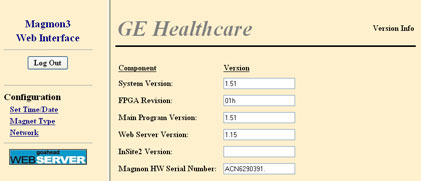

Operating Documentation
Direction 5133315-3, Rev# 14
Signa EXCITE HD 1.5T Service Methods
Module Version 3.0, Version Date 11/5/09
Operating Documentation |
| NOTE: | The web screens and detailed information is provided in the order that it appears on the Navigation menu on the left side of the screen. |
This web page shows the basic layout of the Magmon3 web interface. The left column is a navigation menu where you can select one of the available web pages. Selecting one of the items in the navigation menu changes the page shown in the main section. Upon login, the main section will display the Version Info screen.
Illustration 1: Basic Web Page Layout
